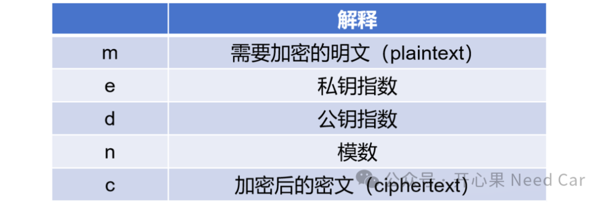
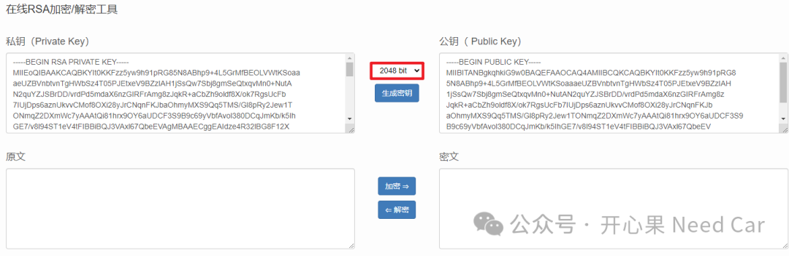
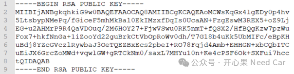
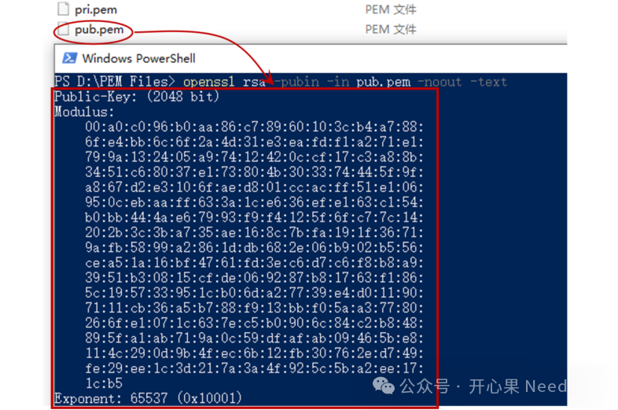
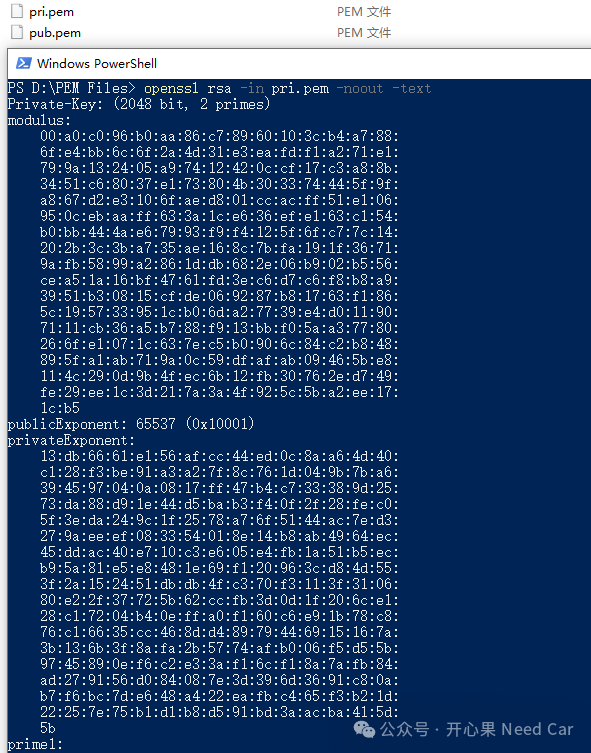
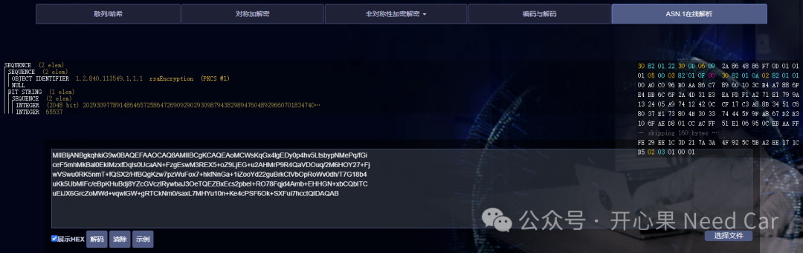
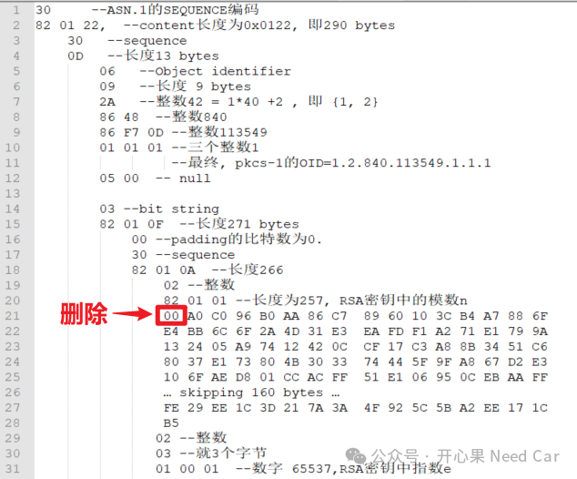

随着车辆的“出海”，信息安全也在随着车辆一同出海。所以，信息安全的问题是我们工程师绕不过去的存在。因此，了解信息安全就成为了我们工程师的必选课。但是，对于信息安全，入门门槛还是有的，即使一些概念，有时也会“困”住我们好一阵子。尤其对于从事信息安全的开发工程师，更是如此。我们知道，目前，Bootloader升级Application时，常常使用RSA算法（eg：RSA2048）进行信息的验证。而在验证RSA算法有效性的时候，你是怎么做的呢？常见的几种做法：- 使用Python写一个脚本，获取对应的私钥和公钥；
具体描述一个需求场景：开发RSA2048算法，需要生成一对密钥（公钥/私钥），同时，需要将公钥以十六进制的形式发送给控制器，上位机使用私钥对某个信息进行签名（Sign），之后由控制器内配对的公钥进行验签（verify）。而这里的关键是如何获取公钥参数，并将公钥参数以十六进制的形式发送到控制器内，有没有简易的做法？聚焦此问题，本文给出一种具体实现的做法，以此摆脱开发的束缚。了解RSA，绕不过RSA的基本公式，RSA对应的加密/解密公式如下：
真的要讲解这个公式吗？答：不讲解。对于应用工程来说，我们不过多深究数学本身，只要理解基本概念，掌握如何使用即可。符号解释如下：

对于实际的数学推导过程，我们不做深究，开发中，我们关注如何表示公钥，如何提取公钥参数，以及如何传输公钥。公钥的表示如下：
而在实际的开发过程中，除了需要传输公钥的d和n，往往还需要告诉控制器，密钥的大小，即：Size。所以，实际要传输给控制器的参数表示如下：
A2：使用RSA加密后的密文长度和密钥长度相同，eg：RSA2048，密钥和密文的长度均为2048bit，即：256 bytes。注意，这里的密钥长度指模数的长度。A3：目前，bootloader开发中，普遍使用RSA2048，即：密钥长度为2048 bit，但是，RSA算法长度不仅仅只有2048 bit，还有1024 bit、3072 bit、4096bit等。而有的项目可能会使用RSA3072，所以，实际开发中，传输公钥时，需要传输公钥的长度（size）。A4：RSA算法中，密钥长度的本质是模数（n）的长度。
（一）RSA密钥生成
如果要获取公钥的指数和模数，首先，我们需要生成RSA密钥对。对于如何生成RSA密钥，方式很多：在线生成、Python生成、专有工具生成...
https://tool.ip138.com/rsa/
2、使用python生成（推荐），对应代码如下：
import Crypto.PublicKey.RSA
pri_key = Crypto.PublicKey.RSA.generate(2048)
pub_key = pri_key.publickey() with open("pub.pem", "wb") as pub_fp: pub_fp.write(pub_key.export_key()) with open("pri.pem", "wb") as pri_fp: pri_fp.write(pri_key.export_key("PEM"))
生成RSA密钥对以后，即可将其进行保存，eg：公钥保存到pub.pem文件，私钥保存到pri.pem文件。
生成RSA密钥以后，接下来就是如何存储RSA公钥（public key）和私钥（private key）的问题。既然存储密钥，我们就需要清楚一点：以什么样的格式存储RSA的公钥和私钥。实际项目应用中，通常会使用PEM (Privacy Enhanced Mail) 格式存储密钥。PEM格式是基于Base64编码的ASCII文件。RSA的密钥信息（指数、模数）均可从该文件中获取。
以RSA公钥为例，PEM文件使用特定的开始（-----BEGIN RSA PUBLIC KEY-----）和结束（-----END RSA PUBLIC KEY-----）标记来表示密钥的边界，示意如下：

如上图，（-----BEGIN RSA PUBLIC KEY-----）和（-----END RSA PUBLIC KEY-----）之间的公钥是经过Base64编码的ASCII字符，而传输给控制器的信息，需要以十六进制的形式表示，如何将如上的信息转换呢？
转换的方式、方法有多种，但是，本文要基于一种简单的方式，或者说免费的方式获取。怎么做呢?关于openssl的安装和环境设置，本文不讨论，大家根据所用电脑系统和配置，自行选择对应版本安装和使用。openssl的下载链接如下：
https://slproweb.com/products/Win32OpenSSL.html
1、读取PEM文件中的公钥信息
在命令行中执行如下语句：
openssl rsa -pubin -in pub.pem -noout -text
pub.pem中的公钥信息（大小，模数（modulus）、指数（exponent））如下所示：

获取了如上的信息，我们即可将如上转换后的信息发送给控制器，验证接下来的开发。
提示：虽然公钥指数可以随意选择，但是，综合考虑计算速度和安全性，一般选择数值65537（0x10001）。
2、读取PEM文件中的RSA私钥信息
除了读取公钥信息，当然，也可以读取私钥信息，所需命令如下：
openssl rsa -in pri.pem -noout -text
读取pri.pem，获取的信息如下所示：

有了RSA公钥信息（十六进制），即可验证算法的有效性。
（二）在线解析PEM文件
如果不想安装Openssl，也可以在线解析PEM文件，对应的解析地址如下：
https://aks.jd.com/tools/sec/“选择”对应PEM文件，进行ASN.1解析，示意如下：

如果有小伙伴对ASN.1的编码规则感兴趣，可以参考对应的编码规范。如上pub.pem的ASN.1解释示意如下：
如上的解析中，不管是用openssl解析还是在线解析PEM文件，获取的RSA公钥长度均为257 bytes，RSA2048对应的密钥长度不是256 bytes吗？答：需要将解析后的模数(n)第一个字节0x00删除。
综上，通过Openssl或者在线解析获取16进制的密钥模数和指数，以便于传输给目标控制器。
点击下方关注，一起聊聊Autosar/嵌入式，如果需要，联系作者进群，给你更专业的解答